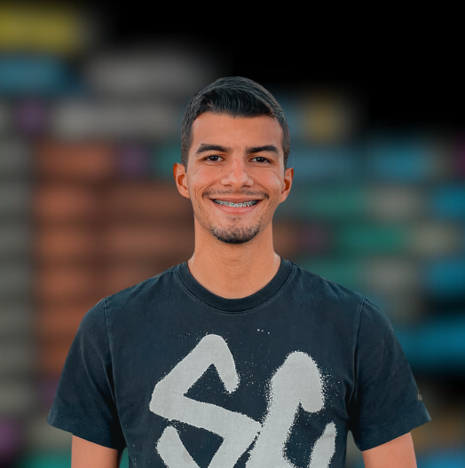

Heinrich Hoffman.
Cientista da Computação e de Dados em Formação.
Estudante de Ciência da Computação e Ciência de Dados focado em criar soluções digitais inteligentes. Possuo grande interesse na análises de dados e automações com Inteligência Artificial, para dar suporte a decisões estratégicas de negócios.
 LinkedIn
LinkedIn
 GitHub
GitHub

Meu Portfólio
Projetos Acadêmicos
Repositório dedicado aos trabalhos, estudos de caso e aplicações desenvolvidas durante a graduação em Ciência da Computação.
Ver repositório ➔Projetos Pessoais
Minha "oficina" de código. Aqui exploro automações, scripts em Python, testes com Inteligência Artificial e projetos independentes.
Ver repositório ➔Documentação
Material de apoio,Currículo, arquitetura de projetos, notas de estudo e manuais estruturados com boas práticas de versionamento.
Ver documentos ➔Minhas Certificações
Python for Data Science, AI & Development
Introduction to Data Analytics
Formação Estatística e Machine Learning
Consultas SQL com MySQL Server
Formação IA Generativa
Iniciante em Programação
Introdução à Ciência de Dados
Empreendedorismo e Protagonismo
Formação Desenvolvimento Pessoal
Trajetória e Experiência
💼 Experiência Profissional
Assistente Administrativo e de Inteligência de Dados
Atuação na gestão da informação da Gerência, Auxílio na elaboração de relatórios analíticos, sistematização de dados e auxílio em estudos e pesquisas.
Militar (Cadete Aviador e Aluno EPCAR)
Gestão de recursos e liderança de equipas. Experiência sólida em liderança, gestão de pessoas, trabalho em equipe, tutoria académica e relações públicas institucionais.
Auxiliar de Loja
Forte contacto com o público, desenvolvendo resiliência, organização ágil de stock e gestão de processos dinâmicos e vendas sob pressão.
Estagiário
Gestão de processos eletrónicos e físicos, receção e atendimento, familiarizando-me com fluxos de trabalho organizacionais.
🎓 Formação Académica
Bacharelato em Ciência da Computação
Tecnólogo em Ciência de Dados
Estudos de Idiomas
Inglês intermédio-avançado (B1-B2) e introdução ao Francês (A1), ampliando a capacidade de comunicação e leitura de documentação técnica global.
Sobre Mim
Sou um entusiasta de tecnologia, cursando Ciência da Computação e Ciência de Dados. Tenho um forte foco em Python, SQL e sua aplicação no ecossistema de Inteligência Artificial e Análise de Dados.
Minha vivência profissional na Força Aérea Brasileira e em instituições públicas (STJ e Embratur) me ensinou o valor da liderança, do trabalho em equipe e da resolução metódica de problemas. Adoro transformar dados complexos e ideias abstratas em soluções reais e impactantes.